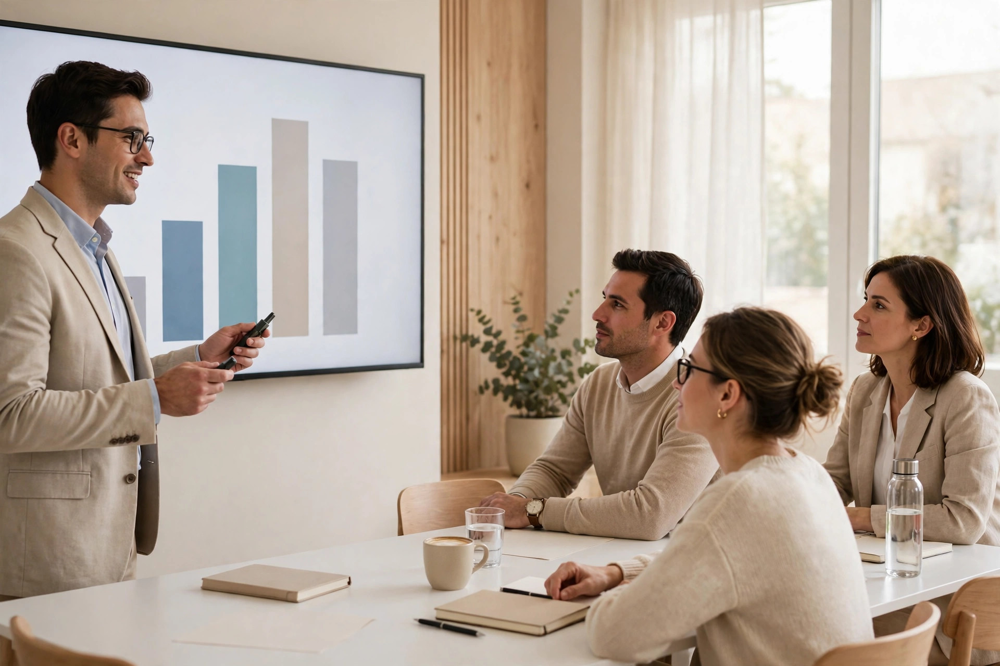
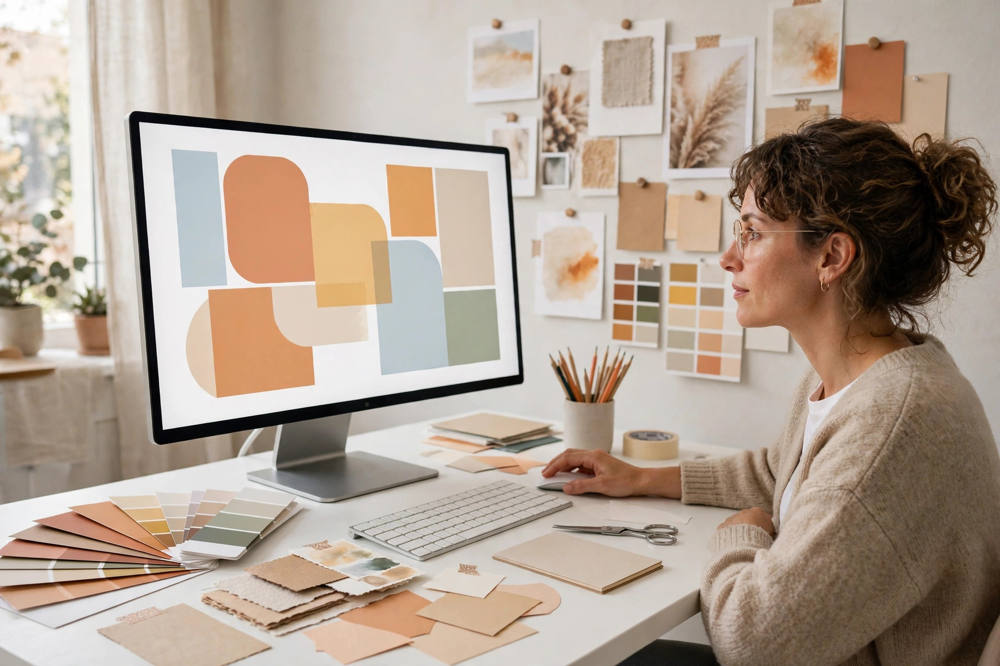
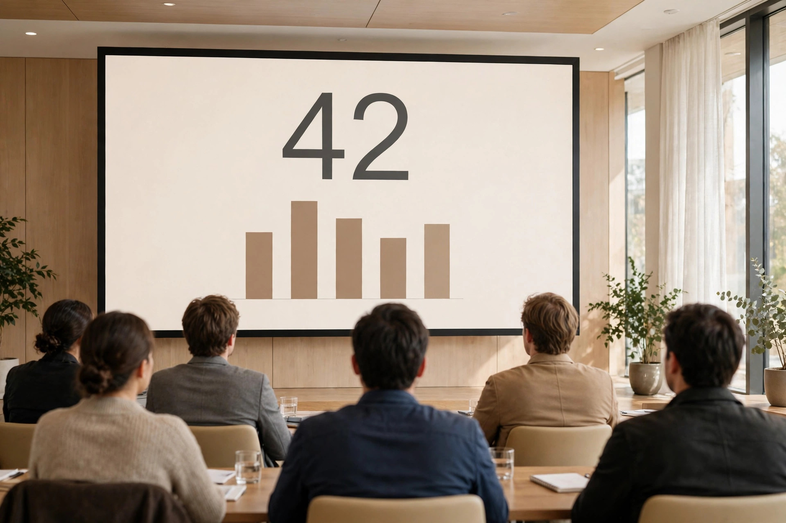

A complete PPT design workflow, shown end to end on a sample manuscript. A client sends a rough draft; we return a presentation that is ready to present.
This is not a tool. It is a finished sample of the work a client receives.

From a rough draft to slides ready to present

Three style directions to choose from — pick one, we build the deck

Data into visuals — the numbers become the story
STEP 1Analyse the draft
STEP 2Find key points
STEP 3Layout & structure
STEP 4Pick a style
STEP 5Data into visuals
STEP 6Motion & polish
STEP 7Deliver
Step 1. Analyse the manuscript
The job starts with the client's own words. Here is the sample draft we worked from - a fictional Q3 business review from a made-up outdoor gear brand.
"This quarter was our strongest so far. Revenue reached 96, up from 78 in Q2 and 62 in Q1, which is about 55 percent growth since the start of the year. Two things drove it: the new trail shoe line sold far better than we planned, and repeat customers came back at a much higher rate after we fixed shipping times. The weak spot was the accessories range, which barely grew, and our ad spend kept rising while the return on it fell. Next quarter we will focus on the shoe line, cut the two worst-performing ad channels, and put the savings into the loyalty programme."
"We also opened two new retail partners in the quarter, and the team grew from 14 to 19 people. Hiring is still the main risk: three roles are open and the warehouse lead role has been empty for six weeks."
Step 2. Find the key points in the text
A draft is a wall of words. We pull out the five points the audience must remember, and everything else becomes supporting detail.
HEADLINE
Strongest quarter so far: revenue 96
The one number the whole deck opens with.
GROWTH DRIVER 1
Trail shoe line beat its plan
New product, not discounts, drove the growth.
GROWTH DRIVER 2
Repeat customers returned after faster shipping
An operations fix became a revenue story.
WEAK SPOT
Accessories flat; ad return falling
Stated honestly, with a fix attached.
NEXT QUARTER
Double down on shoes, cut 2 ad channels, fund loyalty
Three actions, each tied to a number above.
RISK
Hiring: warehouse lead open 6 weeks
Flagged on its own slide, not buried.
Step 3. Layout and structure
Key points become a slide map before any design starts, so the story flows and nothing important is lost.
01
Cover - Q3 2026: Our Strongest Quarter
One headline, one number, one image.
02
Agenda
Results, drivers, weak spots, next quarter.
03
Q3 at a glance
Revenue 62 - 78 - 96, +55% since Q1.
04
What drove growth
Trail shoes + repeat customers.
05
What did not work
Accessories flat, ad return falling.
06
Q4 plan
Three actions, owners, dates.
07
Risks and hiring
Warehouse lead open 6 weeks.
08
Closing - What we need from you
One ask, one decision, one date.
Step 4. Unify the style - the client chooses
We offer 3 style directions per project. The client picks one from real sample slides, then the whole deck is built in that style - same fonts, same colours, same rules on every slide.
NORTHWIND OUTDOOR - Q3 2026
Our strongest quarter so far.
Revenue 96, up 55% since Q1. Growth came from the product, not from discounts.
SAMPLE
Q3 2026 - RESULTS
Revenue 96. Up 55% since Q1.
78 to 96Q2 TO Q3
+23%QUARTER ON QUARTER
2NEW RETAIL PARTNERS
SAMPLE
NORTHWIND OUTDOOR
Q3 2026: the quarter the plan worked.
Trail shoes beat plan. Repeat customers came back. Revenue 96.
SAMPLE
How the choice works: we send 3 direction samples like these before building the deck. The client picks one, we lock its fonts, colours and grid, and every slide follows it. No mixed styles, no surprises at delivery.
Step 5. Turn data into visuals
Numbers buried in a paragraph are forgotten. The same numbers as a chart and a table are remembered - and believed.
Before - numbers in text
"Revenue reached 96, up from 78 in Q2 and 62 in Q1, which is about 55 percent growth since the start of the year. Two things drove it: the new trail shoe line sold far better than we planned, and repeat customers came back at a much higher rate after we fixed shipping times."
Problem: the reader must do the maths. Most will not.
After - chart and table
62Q1
78Q2
96Q3
84Q4 plan
Quarter
Revenue
Change
Q1
62
-
Q2
78
+26%
Q3
96
+23%
Step 6. Transitions, motion and polish
Motion is used to guide the eye, not to show off. One transition family per deck, kept consistent, so the presentation feels professional instead of busy.
FADE
FadeHeadlines and key numbers appear softly; used for results slides.
SLIDE UP
Slide upCharts and tables rise into place; used for data slides.
ZOOM
ZoomOne idea grows to full size; used for the closing ask.
One font family for headings, one for body - the same on all 8 slides.
Numbers checked against the manuscript: 62, 78, 96 and +55% match the draft.
Text checked for overflow at every slide size; nothing is cut off or overlapping.
Colour contrast checked so the deck reads in a bright meeting room, not only on screen.
Step 7. What the client receives
This is what $40/hr buys: a finished, editable presentation - not a screenshot, not a PDF alone.
Editable PPTX fileNative text, charts and tables - the client can edit every word and number later.
PDF exportPrint-ready version for sharing with people who do not have PowerPoint.
Speaker notesShort notes under each slide, so the presenter knows what to say.
Source and style fileFonts, colours and the style rules, so the next deck matches this one.
3 style directions to choose fromSample slides up front; the client picks before production starts.
2 revision rounds includedChanges after the first full draft, within the agreed scope.
All names, numbers and slides on this page are fictional sample data, shown to demonstrate the workflow. A live engagement uses the client's own manuscript and figures. SAMPLE - DEMO ONLY.